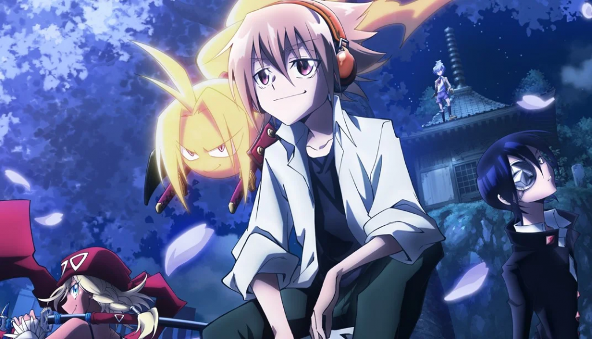

14 de Novembro, 2023
SHAMAN KING FLOWERS GANHA NOVO TRAILER
MÚSICA DA ABERTURA TAMBÉM FOI REVELADA
©Shaman King Flowers
O site oficial de Shaman King Flowers divulgou um novo comercial revelando a música tema de abertura, "Turn the World" de Nana Mizuki, conhecida por dar voz ao personagem Tamao Tamamura na série. Além disso, a data de estreia do anime foi confirmada para 9 de janeiro. Animado para conferir essa continuação?
Mais informações:
Takeshi Furuta, conhecido por seu trabalho em Utano☆Princesama Legend Star, retorna para dirigir a sequência de Shaman King na Bridge. Shoji Yonemura lidera novamente os roteiros, enquanto Mayuko Yamamoto assume o design dos personagens, substituindo Satohiko Sano.
Hiroyuki Takei lançou Shaman King Flowers, um mangá focado em Hana, na revista Jump X em 2012, encerrando-o na última edição da revista em 2014. Posteriormente, Takei iniciou o spin-off Shaman King The Super Star em 2017, embora tenha sido colocado em hiato em setembro de 2021.
O novo anime de Shaman King estreou em abril de 2021 e foi transmitido globalmente pela Netflix a partir de agosto de 2022, encerrando-se com 52 episódios. Essa adaptação abrangeu todos os 35 volumes da nova edição completa do mangá original, publicada em volumes impressos pela Kodansha no Japão a partir de junho de 2020. A primeira adaptação para anime do mangá estreou em 2001.
Fonte: Anime United